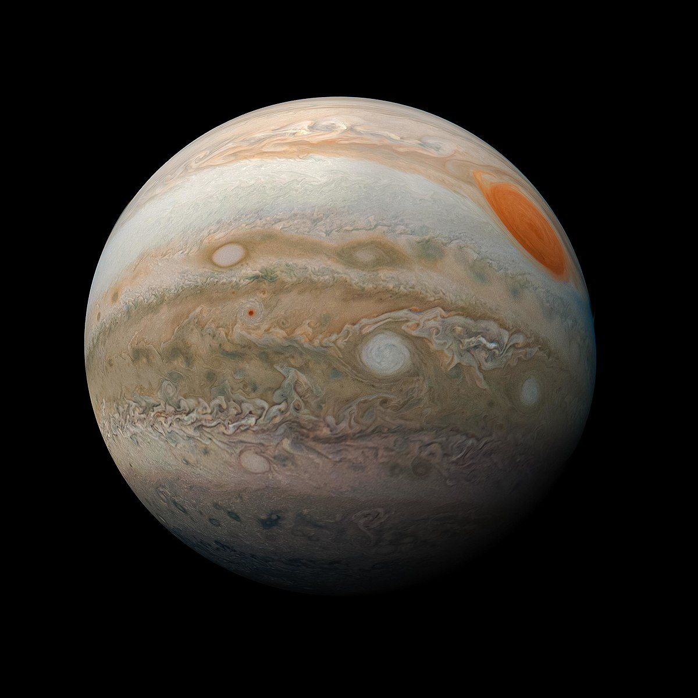

Los Planetas
MERCURIO
Mercurio es un planeta sólido y rocoso, es el planeta más cercano al Sol y es también el más pequeño de todos los planetas del Sistema Solar. Es sólo un poco más grande que la Luna, el satélite natural de la Tierra, ambos cuerpos celestes se caracterizan por tener una superficie cubierta de cráteres.
El nombre de este planeta no es casualidad pues, al igual que Mercurio era el más veloz de los dioses del Olimpo, con una velocidad de 170.5030 kilómetros por hora, el planeta Mercurio es el que viaja más rápido a través del espacio en nuestro sistema solar. Además, la órbita de Mercurio es la más excéntrica entre todos los planetas que orbitan el Sol, al que tarda 88 días en dar una vuelta completa.
Por su proximidad a nuestra estrella, desde la superficie de Mercurio nuestro Sol se vería 3 veces más grande que desde la Tierra, y su brillo sería hasta 7 veces superior. Del mismo modo, cabría esperar que, por su cercanía al Sol, Mercurio fuera el planeta más caliente del sistema solar, sin embargo, contradiciendo la intuición, este honor es para el Venus, pues es en Venus que, debido a su densa atmósfera, se registran las temperaturas más altas de todo el sistema solar. También cabe decir que eje de rotación de Mercurio está inclinado apenas 2 grados con respecto al plano de su órbita alrededor del Sol. Eso significa que gira casi perfectamente en posición vertical y, por lo tanto, no experimenta estaciones.
VENUS
Venus es un planeta rocoso, sin satélites y sin anillos. Se trata de un planeta extremo, caliente, seco y con una presión en la superficie 90 veces superior a la terrestre. Es de hecho el planeta más caliente de todos a pesar de no estar más cerca del Sol que Mercurio, y aunque sus dimensiones son muy similares a las de la Tierra, su atmósfera y composición hacen que la vida sea muy poco probable.
Se sabe que el planeta tiene una superficie rocosa gracias a la misión Magallanes de la NASA, que obtuvo información del 98 por ciento del planeta. Anteriormente sólo existían conjeturas, ya que desde el espacio sólo es posible ver las nubes blancuzcas. Ahora se sabe que Venus tiene una superficie sólida que presenta varios tonos de gris, con muchos cráteres y cañones.
Los cráteres miden de 1.5 a 2 kilómetros y no se evidencian más pequeños; pues los meteoritos de menor magnitud son destruidos en la atmósfera antes de que consigan llegar a la superficie. Por ejemplo, el cráter Howe mide más de 23 kilómetros de diámetro. Hay además más de 1,000 volcanes que superan los 20 kilómetros de diámetro, pero no se sabe si están activos.

TIERRA
Nuestro hogar, el planeta Tierra, es un planeta terrestre y rocoso. Tiene una superficie sólida y activa, con montañas, valles, cañones, llanuras y mucho más. La Tierra es especial porque es un planeta océano, ya que el agua cubre el 70% de su superficie.
Nuestra atmósferaestá compuesta, en gran parte, por nitrógeno. También tiene mucho oxígeno, que nos permite respirar. Además, nos protege de los meteoroides que se acercan a la Tierra, la mayoría de los cuales se desintegran en nuestra atmósfera antes de llegar a la superficie en forma de meteoritos.

JÚPITER
Júpiter es el quinto planeta más cercano del sistema solar y el primero de los planetas gaseosos. Está formado mayoritariamente por gases, por este motivo, es conocido como un gigante gaseoso, igual que Saturno, Urano y Neptuno.
Júpiter es uno de los cinco planetas que pueden verse a simple vista desde la Tierra. A pesar de estar a una distancia que alcanza los 600 millones de km de la Tierra, Júpiter es uno de los objetos más brillantes del cielo nocturno, por detrás de Venus y la Luna. Las noches en las que Venus no es visible, Júpiter se convierte en el planeta más brillante del firmamento.
Debido a su brillo, Júpiter ya era conocido por las civilizaciones antiguas. Su nombre actual proviene del dios principal de la mitología romana. Antes, los griegos habían asociado este planeta con el dios Zeus.
SATURNO
Saturno es el sexto planeta del sistema solar y está situado entre Júpiter y Urano. Saturno es uno de los cuatro planetas exteriores del sistema solar, conocidos como gigantes gaseosos debido a su composición.
A pesar de estar situado inmediatamente después de Júpiter, Saturno sigue una órbita prácticamente el doble de grande. Esto hace que la mayor parte del tiempo haya más distancia entre Saturno y Júpiter que entre Júpiter y la Tierra.
Saturno es el último planeta que puede ser visto fácilmente a simple vista. Durante gran parte de la historia, Saturno fue considerado el último planeta del sistema solar. Esto cambió en 1781 cuando William Herschel anunció el descubrimiento de Urano, que solo en condiciones especiales puede llegar a ser visto sin la ayuda de un telescopio.

URANO
Urano es el séptimo planeta del sistema solar, Uno de los hechos más importantes de Urano es que fue descubierto en la edad moderna y, por lo tanto, no era un planeta conocido por las civilizaciones antiguas.Sin embargo, es posible llegar a verlo a simple vista, aunque solo si las condiciones meteorológicas son extremadamente buenas y si se conoce el punto exacto donde mirar.
Esto hizo que el planeta no fuera descubierto hasta 1781. De hecho cuando el astrónomo William Herschel lo observó por primera vez a través de su telescopio pensó que se trataba de un cometa. Fue solo después de seguir su movimiento durante unos meses cuando llegó a la conclusión de que en realidad se trataba de un planeta. No fue hasta dos años más tarde cuando se aceptó definitivamente que Urano era un planeta del sistema solar.
El descubrimiento de Urano fue un hecho histórico de gran importancia porque hasta aquel momento todos los planetas, desde Mercurio hasta Saturno, ya eran conocidos desde la antigüedad. El descubrimiento de Urano hizo que automáticamente el sistema solar pasara a ser el doble de grande, dado que la órbita de Urano es el doble de grande que la órbita de Saturno.

NEPTUNO
Neptuno es el último planeta del sistema solar, situado a una distancia del Sol 30 veces superior a la de la Tierra.Esta gran distancia hace que, a pesar de su tamaño, Neptuno no pueda ser visto a simple vista desde la Tierra. Esto explica que este planeta no fuera conocido por las civilizaciones antiguas. Su descubrimiento fue una consecuencia del descubrimiento de Urano.
Cuando los científicos descubrieron el planeta Urano, observaron que su órbita seguía un movimiento impredecible. Esto les permitió deducir que debía haber un cuerpo de grandes dimensiones, situado relativamente cerca de Urano, que afectaba su órbita debido a la gravedad. A partir de las desviaciones en la órbita de Urano pudieron deducir la posición de un octavo planeta. Cuando miraron con el telescopio en el punto calculado encontraron efectivamente al planeta Neptuno.
El planeta Neptuno recibe su nombre del dios de las aguas y los mares de la mitología romana, en relación a su color azul.
Debido a las grandes dimensiones de su órbita, Neptuno tarda casi 165 años en dar una vuelta completa alrededor del Sol. Esto hizo que fuera en 2011 cuando Neptuno terminó su primera órbita desde su descubrimiento en 1846.
Neptuno es el más pequeño de los cuatro gigantes gaseosos del sistema solar (Júpiter, Saturno, Urano y Neptuno). Sin embargo, su alta densidad hace que la gravedad en su superficie sea de las más altas del sistema solar, solo superada por la gravedad en Júpiter.